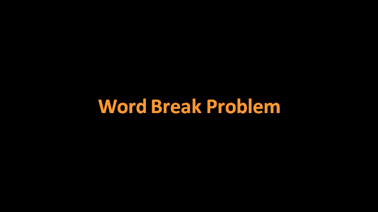

The Word Break problem emerged from the field of Natural Language Processing (NLP) in the 1990s. It became particularly important with the rise of search engines and text processing systems. The problem gained significant attention when it was included in various programming interviews by major tech companies. Its practical applications in text segmentation, particularly for languages that don't use spaces between words (like Chinese or Japanese), made it a fundamental problem in computational linguistics.
Quick Info
Category:
Dynamic Programming
Time Complexity:
O(2^n)
Space Complexity:
O(n)
Input Type:
String and dictionary
Word Break Problem
Description
The Word Break Problem is a classic algorithmic challenge where we need to determine if a given string can be segmented into a space-separated sequence of dictionary words. The problem has applications in natural language processing, text analysis, and computational linguistics.
History

Visualization
Enter a string and dictionary words, then click Start
Implementation
def word_break(s: str, word_dict: set) -> bool:
def backtrack(start: int) -> bool:
# Base case: reached end of string
if start == len(s):
return True
# Try all possible words from current position
for end in range(start + 1, len(s) + 1):
word = s[start:end]
if word in word_dict and backtrack(end):
return True
return False
return backtrack(0)
# Example usage
if __name__ == "__main__":
dictionary = {"pine", "apple", "pineapple", "and", "dog"}
s = "pineappleanddog"
result = word_break(s, dictionary)
print(f"Can break '{s}' into words: {result}")
class WordBreak {
private:
bool backtrack(string& s, unordered_set<string>& dict, int start) {
// Base case: reached end of string
if (start == s.length()) return true;
// Try all possible words from current position
for (int end = start + 1; end <= s.length(); end++) {
string word = s.substr(start, end - start);
if (dict.count(word) && backtrack(s, dict, end)) {
return true;
}
}
return false;
}
public:
bool wordBreak(string s, vector<string>& wordDict) {
unordered_set<string> dict(wordDict.begin(), wordDict.end());
return backtrack(s, dict, 0);
}
};
int main() {
vector<string> dictionary = {"pine", "apple", "pineapple", "and", "dog"};
string s = "pineappleanddog";
WordBreak solution;
bool result = solution.wordBreak(s, dictionary);
cout << "Can break '" << s << "' into words: "
<< (result ? "true" : "false") << endl;
return 0;
}
public class WordBreak {
private bool Backtrack(string s, HashSet<string> dict, int start) {
// Base case: reached end of string
if (start == s.Length) return true;
// Try all possible words from current position
for (int end = start + 1; end <= s.Length; end++) {
string word = s.Substring(start, end - start);
if (dict.Contains(word) && Backtrack(s, dict, end)) {
return true;
}
}
return false;
}
public bool CanBreak(string s, IList<string> wordDict) {
var dict = new HashSet<string>(wordDict);
return Backtrack(s, dict, 0);
}
}
public class Program {
public static void Main() {
var dictionary = new List<string> {"pine", "apple", "pineapple", "and", "dog"};
string s = "pineappleanddog";
var solution = new WordBreak();
bool result = solution.CanBreak(s, dictionary);
Console.WriteLine($"Can break '{s}' into words: {result}");
}
}
Complexity Analysis
Time Complexity
The time complexity of the backtracking solution is O(2^n), where n is the length of the string:
- At each position, we have two choices: split or don't split
- In worst case, we might need to try all possible combinations
- String operations (substring) take O(k) time where k is substring length
Space Complexity
The space complexity is O(n), which includes:
- Recursion stack space: O(n)
- Maximum depth equals string length
- Each recursive call uses constant extra space
- Dictionary storage: O(m) where m is total length of dictionary words
Advantages and Disadvantages
Advantages
- Simple and intuitive implementation
- Works well for small inputs
- Can find all possible segmentations
- Low space complexity
Disadvantages
- Exponential time complexity
- Not efficient for long strings
- May explore same subproblems multiple times
- Performance depends on dictionary size